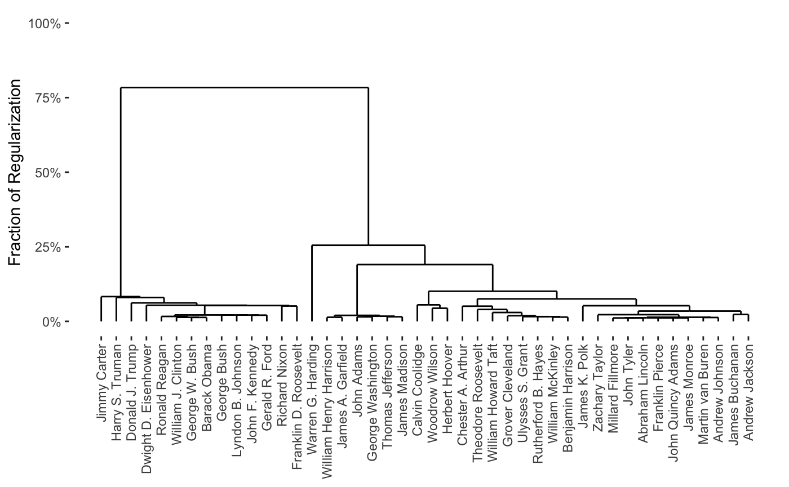
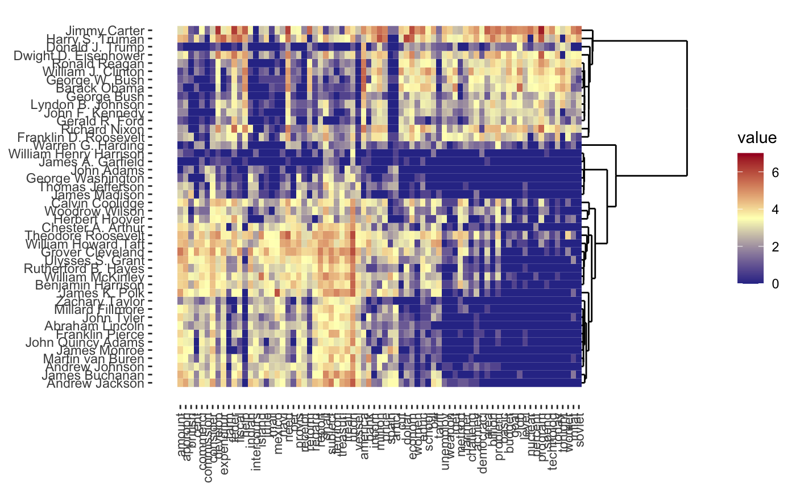
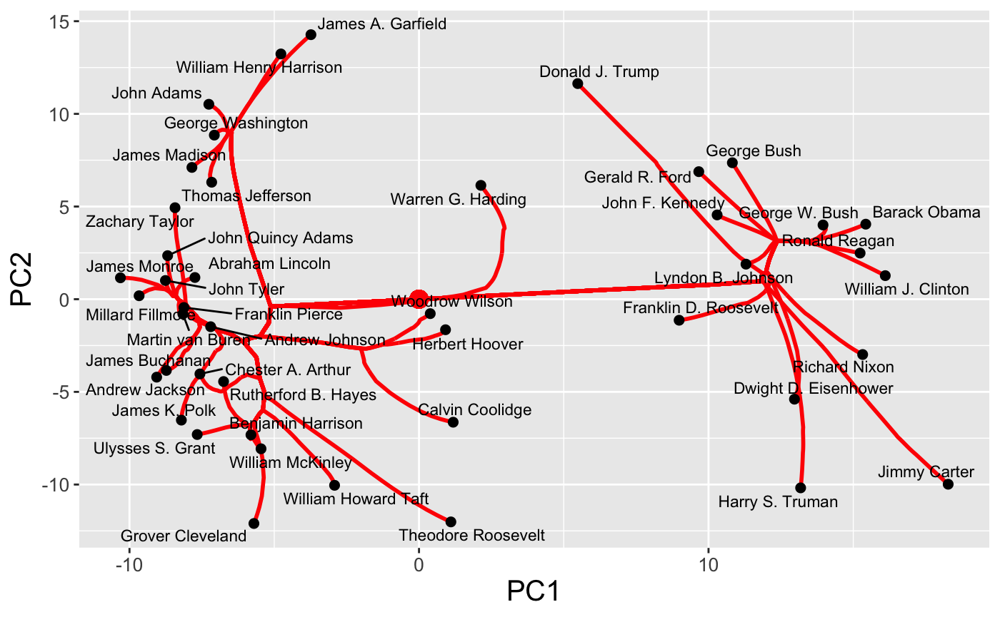
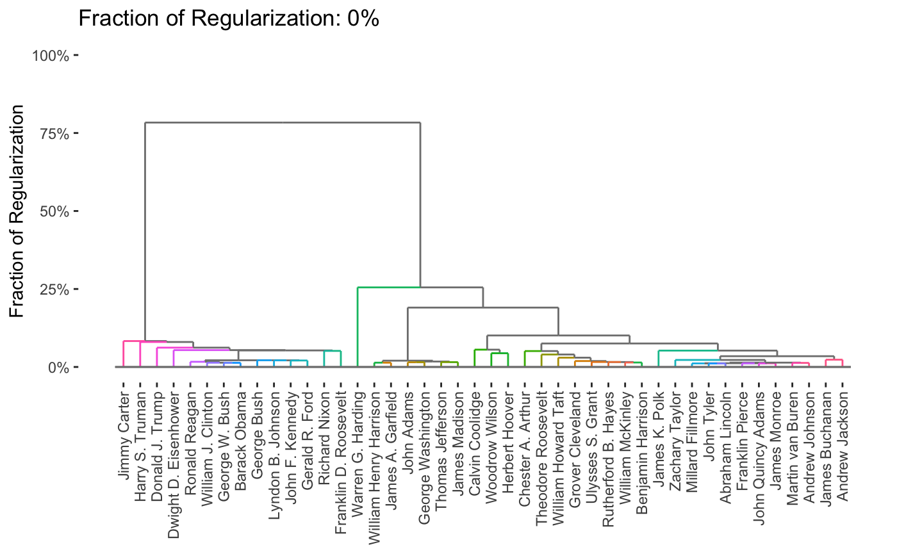
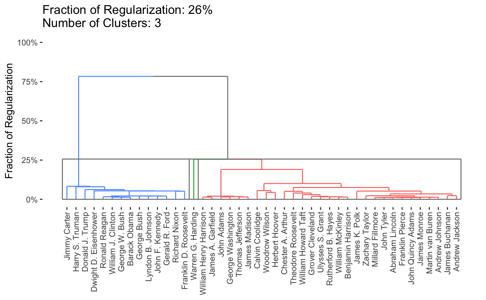
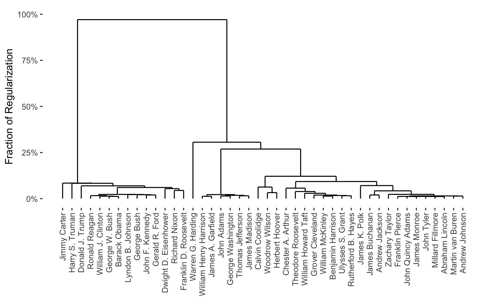
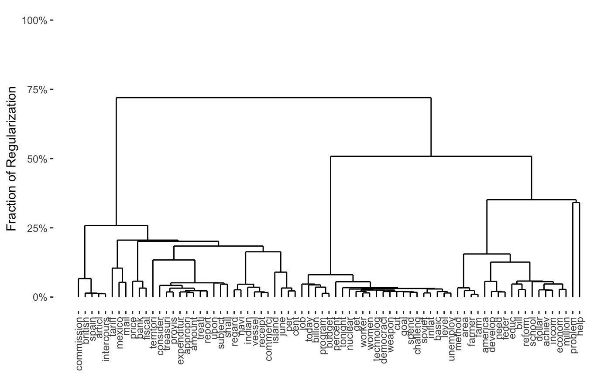
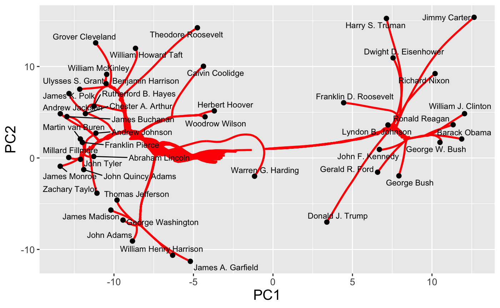
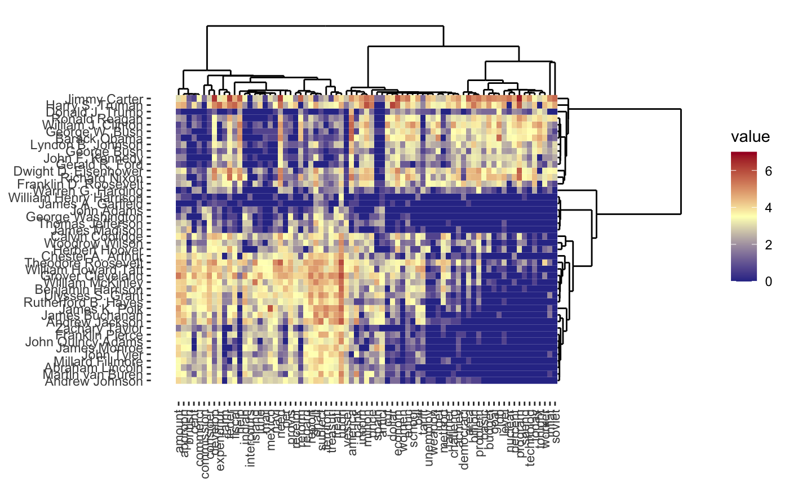
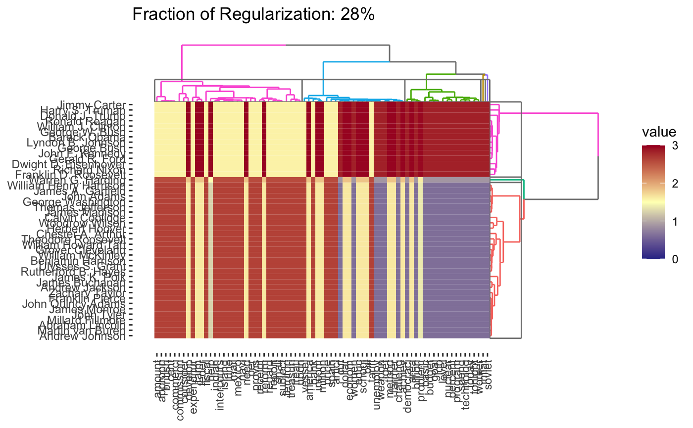

clustRviz Quick Start
Michael Weylandt
Department of Statistics, Rice Universitymichael.weylandt@rice.edu
John Nagorski
Department of Statistics, Rice UniversityGenevera I. Allen
Jan and Dan Duncan Neurological Research Institute, Baylor College of Medicine
gallen@rice.edu
Last Updated: August 19th, 2020
Source:vignettes/clustRviz.Rmd
clustRviz.RmdIntroduction
This vignette provides a brief introduction to the clustRviz package, describing how to use the main entry points CARP and CBASS and providing a quick overview of the rich built-in graphics functionality. For more details on graphics, weight selection, or the computational algorithms used, please see the other package vignettes.
Clustering
clustRviz implements the convex clustering formulation popularized by Hocking et al. (2011) and uses the path-wise algorithms of Weylandt, Nagorski, and Allen (2020) to support full path computation and dendrogram construction. This allows convex clustering to produce hclust-style dendrograms while maintaining its statistical and computational advantages.
The main entry point for clustering is the CARP function, which implements the Clustering via Algorithmic Regularization Paths proposed by Weylandt, Nagorski, and Allen (2020). We can use it on the built-in presidential_speech data set:
library(clustRviz) carp_fit <- CARP(presidential_speech) print(carp_fit) #> CARP Fit Summary #> ==================== #> #> Algorithm: CARP (t = 1.05) #> Fit Time: 0.403 secs #> Total Time: 1.617 secs #> #> Number of Observations: 44 #> Number of Variables: 75 #> #> Pre-processing options: #> - Columnwise centering: TRUE #> - Columnwise scaling: FALSE #> #> Weights: #> - Source: Radial Basis Function Kernel Weights #> - Distance Metric: Euclidean #> - Scale parameter (phi): 0.01 [Data-Driven] #> - Sparsified: 4 Nearest Neighbors [Data-Driven]
As can be seen, this provides a full path in only a few seconds. From this, we can produce a variety of attractive plots, including dendrograms
plot(carp_fit, type = "dendrogram")

one-way heatmaps
plot(carp_fit, type = "heatmap")

and regularization paths
plot(carp_fit, type = "path")

For each plot type, interactive and dynamic versions are also supported: for example,
plot(carp_fit, type = "dendrogram", dynamic = TRUE)

By default, the entire path is shown, but it is possible to obtain specific solutions by specifying the k or percent arguments to plot.
plot(carp_fit, k = 3)

To work with the clustering solutions directly, the get_cluster_labels, get_clustered_data, or get_cluster_centroids functions may be useful.
Bi-Clustering
Chi et al (2017) proposed a convex formulation of biclustering for which Weylandt (2019) later proposed an efficient ADMM algorithm. This ADMM was adapted into the CBASS - Convex Biclustering via Algorithmic Regularization with Small Steps algorithm. clustRviz exposes an implementation of this algorithm via the function of the same name.
library(clustRviz) cbass_fit <- CBASS(presidential_speech) print(cbass_fit) #> CBASS Fit Summary #> ==================== #> #> Algorithm: CBASS (t = 1.01) #> Fit Time: 4.828 secs #> Total Time: 8.310 secs #> #> Number of Rows: 44 #> Number of Columns: 75 #> #> Pre-processing options: #> - Global centering: TRUE #> #> Row Weights: #> - Source: Radial Basis Function Kernel Weights #> - Distance Metric: Euclidean #> - Scale parameter (phi): 0.01 [Data-Driven] #> - Sparsified: 4 Nearest Neighbors [Data-Driven] #> #> Column Weights: #> - Source: Radial Basis Function Kernel Weights #> - Distance Metric: Euclidean #> - Scale parameter (phi): 0.01 [Data-Driven] #> - Sparsified: 2 Nearest Neighbors [Data-Driven]
As can be seen, this provides a full path in only a few seconds. In general, the bi-clustering problem is a bit slower than the standard clustering problem but still highly efficient. From this, we can produce a variety of attractive plots, including row- and column-wise dendrograms
plot(cbass_fit, type = "row.dendrogram")

plot(cbass_fit, type = "col.dendrogram")

row- and columnwise regularization paths
plot(cbass_fit, type = "row.path")

and the traditional two-way cluster heatmap
plot(cbass_fit, type = "heatmap")

As before, interactive and dynamic versions are also supported: for example,
plot(cbass_fit, type = "heatmap", dynamic = TRUE)

Because CBASS clusters rows and columns simultaneously, when specifying cluster numbers, it is necessary to distinguish between row and column clusters
plot(cbass_fit, k.row = 3)

This is only a brief demonstration of the capabilities of the clustRviz package - see the other vignettes for more!
References
Chi, Eric C., Genevera I. Allen, and Richard G. Baraniuk. 2017. “Convex Biclustering.” Biometrics 73 (1): 10–19. https://doi.org/10.1111/biom.12540.
Hocking, Toby Dylan, Armand Joulin, Francis Bach, and Jean-Philippe Vert. 2011. “Clusterpath: An Algorithm for Clustering Using Convex Fusion Penalties.” In ICML 2011: Proceedings of the 28th International Conference on Machine Learning, edited by Lise Getoor and Tobias Scheffer, 745–52. Bellevue, Washington, USA: ACM. http://www.icml-2011.org/papers/419_icmlpaper.pdf.
Weylandt, Michael. 2019. “Splitting Methods for Convex Bi-Clustering and Co-Clustering.” In DSW 2019: Proceedings of the IEEE 2019 Data Science Workshop, edited by George Karypis, George Michailidis, and Rebecca Willett, 237–42. IEEE. https://doi.org/10.1109/DSW.2019.8755599.
Weylandt, Michael, John Nagorski, and Genevera I. Allen. 2020. “Dynamic Visualization and Fast Computation for Convex Clustering via Algorithmic Regularization.” Journal of Computational and Graphical Statistics 29 (1): 87–96. https://doi.org/10.1080/10618600.2019.1629943.